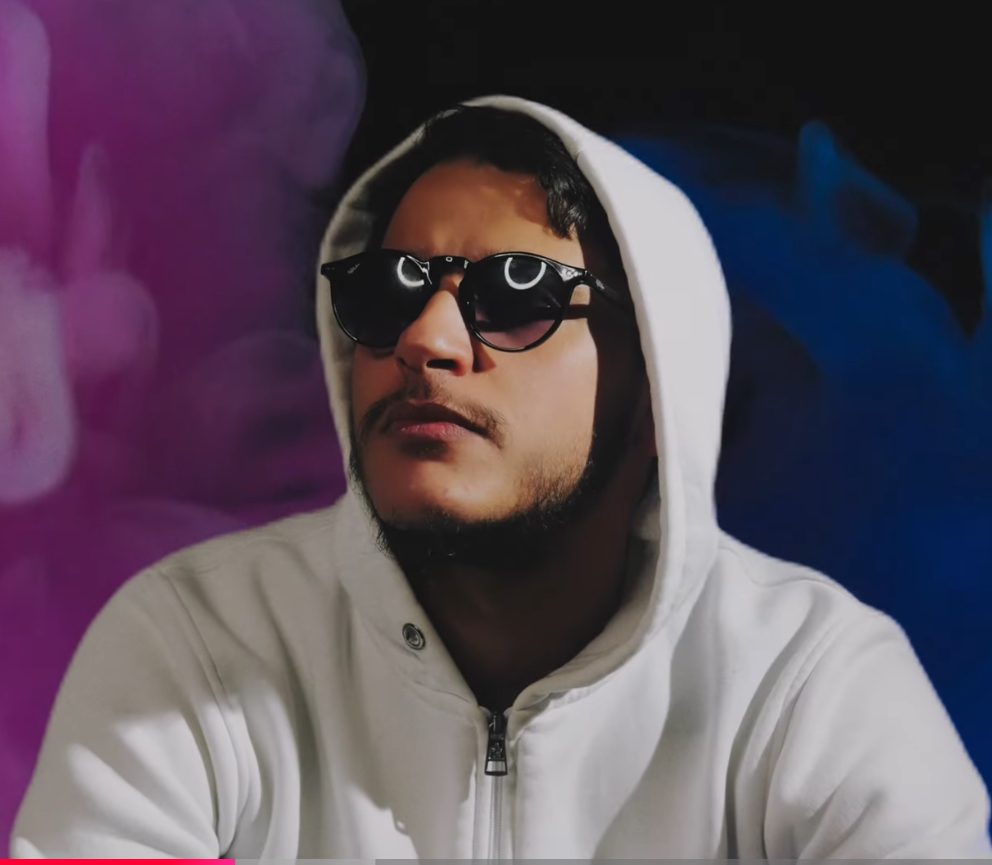

Nash Record · Édition 048
El Kapell
Rap / Raï urbain · Bezons (95)
« Entre ego-trip et réalité, le rap francophone rencontre le raï. »
Suivre & écouter

Nash Record · Édition 048
Bezons dans les veines, l'Algérie dans la voix. Rap Raï urbain. Révélation Planète Rap · Soolking.
Nash Record · Édition 048
Rap / Raï urbain · Bezons (95)
« Entre ego-trip et réalité, le rap francophone rencontre le raï. »
Suivre & écouter
Nouveau single
Single · Out Now
Rap / Raï urbain · 2 min 55
Le premier titre d'El Kapell sous le label Nash Record. Un morceau urbain-raï où l'artiste raconte sa vie, oscillant entre ego-trip et réalité. Refrain en arabe, couplets en français, mélodies orientales signées DJ Sultan.
Discographie · En écoute
Le premier titre Nash Record · Édition 048. #1 Beur FM · France Maghreb 2 · Jil FM Algérie.
Voir le singleD'autres titres produits chez Nash Record sont disponibles sur toutes les plateformes de streaming.
Écouter sur SpotifyUn premier album complet à paraître chez Nash Record. Featurings en cours de dévoilement.
En savoir plusDiffusions & classements
#1 du classement — France. Le titre tourne en heavy rotation depuis sa sortie.
En rotation sur la radio nationale dédiée aux communautés maghrébines en France.
Diffusion sur Jil FM — Algérie. Une percée internationale dès le premier single.
Biographie
El Kapell est un rappeur franco-algérien originaire de Bezons, dans le Val-d'Oise (95). Porté par la culture des cités et par l'héritage musical maghrébin, il impose un univers hybride où le rap français se mêle aux mélodies orientales du raï.
En 2025, son parcours prend un tournant décisif lorsqu'il est invité dans l'émission Planète Rap de Soolking. Sa performance, saluée par le public et les professionnels, le propulse sur le devant de la scène et attire l'attention de Nash Record, label indépendant certifié disque de diamant, qui décide de le signer dans la foulée.
El Kapell développe un style personnel, à la croisée du rap urbain et du raï moderne. Sa plume oscille entre ego-trip assumé et récit d'une réalité vécue — celle d'un jeune artiste issu de la banlieue parisienne, fier de ses origines et de son quartier. Chaque morceau raconte une histoire, entre force, vulnérabilité et fierté culturelle.
Sa signature artistique : des refrains chantés en arabe, des couplets en français, des prods aux sonorités orientales produites par DJ Sultan (Nash Record). Un pont musical entre deux cultures, pensé pour rassembler les communautés autour d'un même son.
Manifeste
« Deux langues, deux cultures, un seul flow. »
El Kapell — Bezons, 2026
À venir
Après le succès de « Mahboul », El Kapell prépare son premier album, prévu pour le 3 juillet 2026 chez Nash Record.
Le projet comportera plusieurs featurings, pour l'instant gardés secrets, qui seront progressivement dévoilés au fil de la campagne de promotion. L'album confirmera la direction artistique du rappeur : un rap contemporain, ancré dans la culture urbaine française, nourri par les mélodies et l'âme du raï algérien.
« Un premier album pensé comme un pont entre deux rives. »